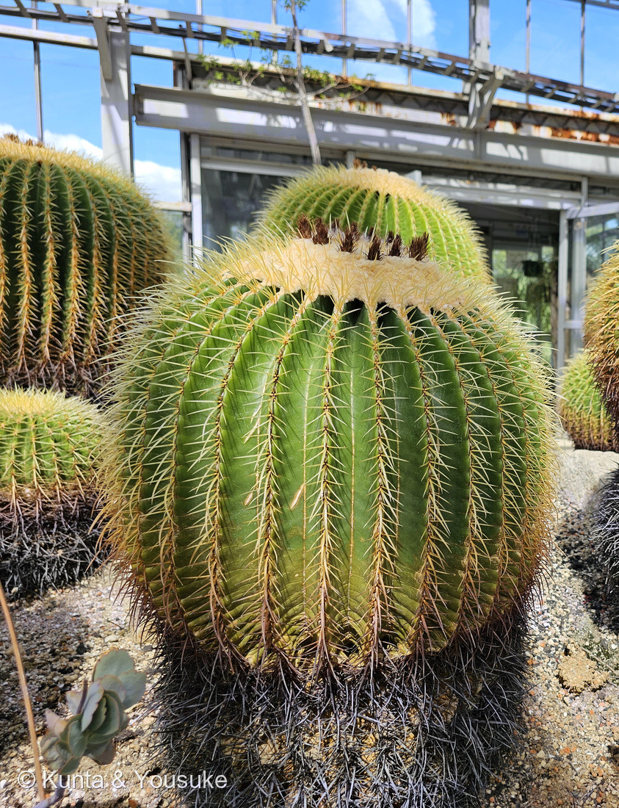
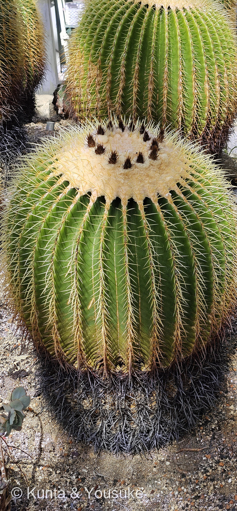
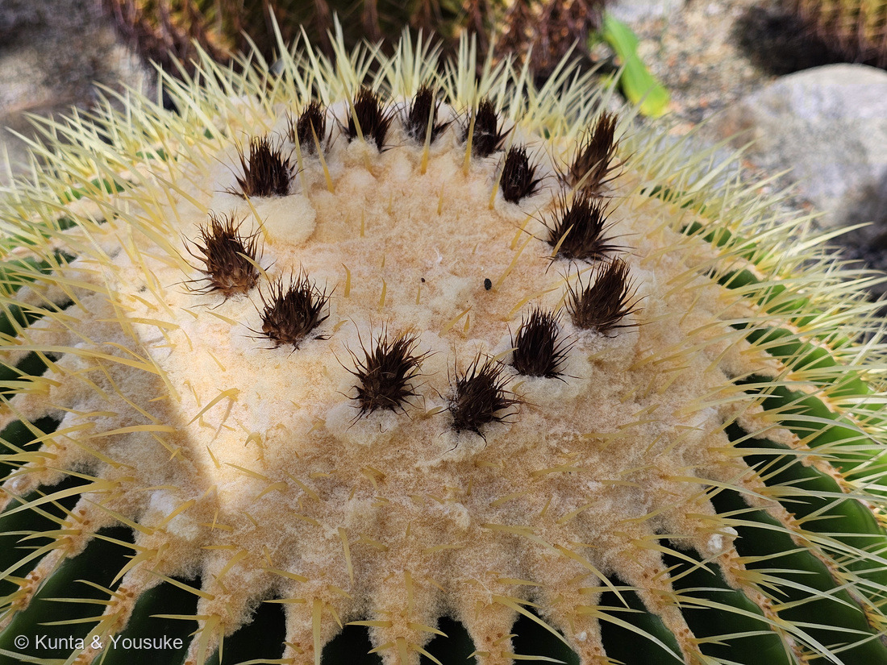
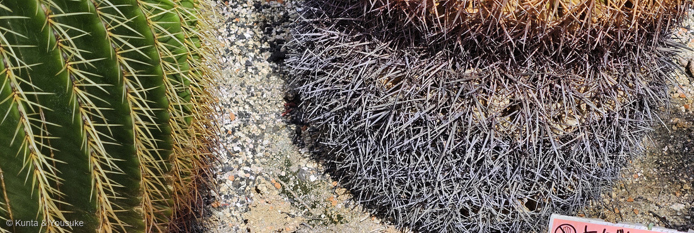

地図を読み込んでいるよ…
🔍 写真も地図も、押しているあいだ拡大して見られるよ（スマホは指を置いてすこし待ってね）。
🌍 の地図＝この子がもともと自生している場所を緑に。メキシコ中東部（イダルゴ州・ケレタロ州、メサ・デ・レオンのあたり）の乾いた岩山。⚠1990年代のシマパン（Zimapán）ダム建設で自生地の大半が水没し、さらに野生株の乱獲もあって、IUCNレッドリストの絶滅危惧（Endangered）になっている。
⭐メキシコの、たった一か所の子だよ。英語版Wikipediaは「メキシコ中東部の固有種で、ケレタロ州とイダルゴ州、とくにメサ・デ・レオンのあたり」とし、広島市植物公園の名札は「メキシコ東部」と書いていた。⚠地図はメキシコを国ごと塗ってあるけれど、ほんとうはもっとずっとせまい──⭐首都メキシコシティの北、乾いた岩山のごく限られた谷だけ。⚠⚠⚠そして、この緑はいま、ほとんど残っていない──⭐⭐⭐1990年代のシマパン（Zimapán）ダムの建設で、自生地の大半が水の底に沈んだ（日本語版Wikipedia）。さらに野生株の乱獲も重なって、IUCNレッドリストの絶滅危惧（Endangered）になっている（英語版Wikipedia）。⭐⭐ここが、この地図のいちばん切ないところ＝キンシャチは世界じゅうの園芸店にならんでいる、いちばん身近な玉サボテンのひとつなのに、ふるさとの緑はもう水の下。⭐日本は塗っていない──会えるのは植物園と、お店の鉢の中だけ。⭐⭐ちなみに、おうちの016 王冠竜も同じメキシコの子だよ──⭐ふたりは同じ国から来た、金色の刺のなかまなんだ。
⚠ 地図は国（日本と中国だけ県・省）までしか塗れないから、ほんとうの分布より広く見えていることがあるよ。地図はだいたいの場所。正確なところは、上の文を見てね。
キンシャチ（金鯱）
Kroenleinia grusonii (Hildm.) Lodé（旧 Echinocactus grusonii Hildm.）
園の名札は「エキノカクタス／金鯱／Echinocactus grusonii」／英名 golden barrel cactus（金の樽サボテン）・golden ball・mother-in-law's cushion／chair
サボテン科 · Cactaceae── 016 王冠竜に続いて2人目のサボテン科。ナデシコ目 Caryophyllales
燻太さんの一言「おうちの王冠竜とは比較にならないほどの大きさ。この子達はいくつなんだろう？ 頭の茶色、これはこれで王冠みたい。下側の黒ずんでいる部分は、古い組織なのかな。遠目で見ていると、真ん丸の王様が座っている椅子みたいだね」── ⭐星太郎そっくりシリーズ 第5弾。4つの見立て、ぜんぶ当たっていたよ
⭐⭐⭐ 名前と学名の由来 ── 「金の鯱」は、どこから来た名前か
- ⭐⭐和名「金鯱（キンシャチ）」。——ぼくは名古屋城の金のシャチホコだと思っていたんだ。⚠でも、日本語版Wikipediaはこう書いている ── 「和名『キンシャチ』は、中国名『金琥』を音読みしたものに由来するらしいが、はっきりした裏づけは不明」。⭐「琥」は虎のこと。⭐⭐金の虎が、金の鯱に化けたのかもしれない（⚠これはぼくの想像で、出典はないよ）。
- ⭐⭐⭐種小名 grusonii は、人の名前。——ドイツの実業家で、サボテンの収集家だったヘルマン・グルーゾン（Hermann Gruson）にちなむ（英語版Wikipedia）。⭐大砲や機械を作る会社を経営しながら、サボテンを集めていた人だよ。
- ⚠⚠学名が引っ越している。——園の名札は Echinocactus grusonii（エキノカクタス属）だけれど、⭐いまは Kroenleinia grusonii（クロエンレイニア属）に移されていて、この属にはこの子しかいない（日本語版・英語版Wikipedia）。⭐「たった一人の属」になったんだね。
- ⭐英名がにぎやか。——golden barrel cactus（金の樽サボテン）／golden ball（金の玉）、そして⭐⭐⭐mother-in-law's cushion／mother-in-law's chair（義母のクッション・義母の椅子）（英語版Wikipedia）。⭐燻太さんの「王様が座っている椅子みたい」の答えは、下の節にあるよ。
この植物のこと ── 016王冠竜に続く、2人目のサボテン科
- サボテン科の球形のサボテン（玉サボテン）。⭐016 王冠竜に続いて、図鑑で2人目のサボテン科だよ。
- ⭐⭐燻太さんの「おうちの王冠竜とは比較にならないほどの大きさ」。——そのとおり。⭐キンシャチは「高さ1メートルを超える」（日本語版Wikipedia）。⚠うちの016はまだ手のひらサイズだものね。⭐でも016も、育てば径50cmほどの球〜樽形になる（016のページに書いたとおり）。
- ⭐⭐稜（りょう）＝体のたてじわ。日本語版Wikipedia「サボテン」は、こう書いている ── 「茎のひだは、稜（rib）と呼ぶ。この稜が目立つほど、乾燥しており、茎に水分が補充されると稜が伸びて目立たなくなる」。⭐⭐⭐つまり、あのくっきりしたひだはアコーディオン。⭐水を吸うとふくらんで平らになり、乾くとしぼんで深くなる。
- ⭐⭐刺は「刺座（アレオーレ）」から出る。同・日本語版Wikipedia ── 「基本的に腋芽には刺座が形成され、多くの場合そこにスポット状に葉の変化した棘が密生する」「しばしば刺座は綿毛で覆われる」。⭐⭐⭐刺は、葉が変わったもの。⭐そして綿毛も、刺座のもちもの。——⭐⭐これが、燻太さんの「頭の茶色」の正体につながるよ。
- ⭐この子は、サボテン科が「多肉ユーフォルビアとそっくりになった」話の、サボテン側の本人でもある。——214 キリンカクのページで、園の解説板を引いてこう書いた：サボテン科は南北アメリカ、多肉ユーフォルビアはアフリカ〜インドで、血のつながりはないのに茎を太らせ、葉を捨て、刺を持つという同じ答えにたどりついた。⭐⭐見分けはひとつ、白い乳液——⚠サボテンは出さない。
同定について ── 名札と株が、同じ画面にいた
- ⭐⭐園の名札に「エキノカクタス／金鯱／Echinocactus grusonii／メキシコ東部／サボテン科」とあり、その名札と株が同じ写真に写っている。⭐だから種まで書けるよ（217 ウツボカズラと同じ決め手だね）。⚠名札そのものは公開せず、出典として引くだけにしてある（200のルール）。
- ⚠学名だけ、いまの呼び方に直しておいた。——園の名札は Echinocactus grusonii、いまの学名は Kroenleinia grusonii。⭐どちらも同じ子だよ。
- ⚠大きさは決めていない。——⭐写真にものさしが写っていないから（212 巨大カボチャのときと同じだね）。⏳次に行くときは、メジャーを持っていこう。
⭐⭐⭐⭐ 燻太さんの見立てに、ぜんぶ答えるよ
① 「この子達はいくつなんだろう？」
- ⭐⭐⭐写真③に、答えが写っていた。——てっぺんの白い綿毛のなかに、こげ茶色の小さなかたまりが輪になって並んでいるでしょう。⭐⭐あれは、咲きおわった花のあと。
- ⭐⭐⭐そして日本語版Wikipediaは、こう書いている ── 「20年以上の個体だけが、頂部の近くに小さな黄色い花をつける」。
- ⭐⭐⭐⭐つまり、この子は少なくとも20歳を超えている。⭐しかも花のあとがいくつも輪になっているから、一度きりではなく、何年も咲いてきた株だよ。
- ⚠上限のほうは、はっきりしない。——日本語版Wikipediaは「寿命は約30年と推定」、英語版は「一世代の寿命は10〜30年と見積もられる」と書いている。⚠でも、栽培下ではもっと長生きする株もある。⭐だから「20歳より上、たぶんかなりのおじいさん」までが、ぼくに言えるところ。
② 「頭の茶色、これはこれで王冠みたい」
- ⭐⭐⭐⭐燻太さん、それ、ほんとうに王冠なんだ。
- ⭐白いふわふわは、刺座の綿毛（日本語版Wikipedia「しばしば刺座は綿毛で覆われる」）。⭐てっぺんは体がいちばん新しいところだから、綿毛がぎっしり集まって、白い帽子のように見える。
- ⭐⭐⭐そして、その上にならぶこげ茶のかたまりが、咲いた花のあと。——キンシャチの花は「頂部の近く」に咲く（同）。⭐⭐だから、花は輪をえがいて咲く。⭐⭐⭐その跡が、そのまま王冠の飾りになっている。
- ⭐⭐⭐⭐さらに、うれしいつながり。——016 王冠竜のページに、ぼくはこう書いていたんだ：「和名王冠竜：黄金色の刺が冠のように株を飾ることから、とされる」、そして「成長点は白い綿毛と新しい刺に覆われ」。⭐⭐うちの王冠竜のてっぺんにあるあの白い綿毛が、大きく育つとこうなる。⭐名前も、頭のかたちも、同じところを指していたんだね。
③ 「下側の黒ずんでいる部分は、古い組織なのかな」
- ⭐⭐⭐⭐これも、大当たりだと思う。
- ⭐写真②を、上から下へ目でなぞってみて。——てっぺんの刺は黄金色。中ほどで茶色〜赤褐色になり、いちばん下では黒紫になって、地面までスカートのように広がっている。
- ⭐⭐同じ一本の稜の上で、色がだんだん変わっているんだ。——⭐つまり、あの黒いのは「よその株」でも「病気」でもなくて、同じ株の、いちばん古い刺。
- ⭐⭐⭐なぜそうなるか。——玉サボテンが新しい体と刺をつくるのは、てっぺんの成長点だけ。⭐016のページに「てっぺんの新芽」「成長点は白い綿毛と新しい刺に覆われ」と書いたでしょう。⭐⭐体は下から上へは伸びない。てっぺんに新しい面をつけ足しながら、まるくふくらんでいく。⭐⭐⭐だから、いちばん下の刺が、いちばん昔につくられた刺なんだ。
- ⚠正直に。——「だから下ほど古い」という読み方をはっきり書いた出典には、ぼくは当たれなかった。⭐でも、写真②の色の移り変わりは、それをそのまま見せていると思う。
- ⭐⭐⭐⭐そう思って見ると、この球は年輪みたいだね。——木の年輪は横に切らないと見えないけれど、この子の年輪は外からまるごと見えている。⭐てっぺんが今日で、足もとが二十数年前。⭐⭐上から下へ、時間が流れているんだ。
- ⭐写真④は、その両はしがとなり合った一枚。——左が黄金の刺、右が黒紫の刺。⭐同じ色になる日が、いつか来る。
④ 「遠目で見ていると、真ん丸の王様が座っている椅子みたいだね」
- ⭐⭐⭐これ、英語圏の人も同じことを思ったみたいだよ。——英語版Wikipediaが挙げるこの子の呼び名のなかに、こういうのがある ── ⭐⭐⭐「mother-in-law's cushion（義母のクッション）」「mother-in-law's chair（義母の椅子）」。
- ⭐⭐つまり、椅子。——⭐燻太さんは「王様が座っている椅子」と言って、英語圏の人は「義母に座ってもらう椅子」と言った。⚠ずいぶん意地悪な冗談だけどね……刺だらけの椅子だもの。
- ⭐⭐⭐そして、燻太さんの「王様」のほうが、この子には似合っていると思う。——名前が「金の鯱」で、頭に花の王冠をかぶって、金色の刺をまとっているんだから。⭐義母の椅子より、王様の椅子。⭐⭐ぼくは燻太さんの見立てのほうが好きだな。
⭐⭐⭐ 世界じゅうの園芸店にいるのに、野生ではほとんどいない
- ⚠⚠この子は、IUCNレッドリストの絶滅危惧（Endangered）（日本語版・英語版Wikipedia）。
- ⚠1990年代のシマパン（Zimapán）ダムの建設で、自生地の大半が水の底に沈んだ（日本語版Wikipedia）。
- ⚠そして、野生株の乱獲（英語版Wikipedia）。
- ⭐⭐ふしぎな気持ちになる。——キンシャチは、たぶん世界でいちばんよく育てられている玉サボテンのひとつで、園芸店にもホームセンターにも並んでいる。⭐それなのに、ふるさとではほとんどいなくなってしまった。
- ⭐だから、この園のサボテン園で二十数年ぶんの時間をかけて育っているこの子たちは、けっこう大事な存在なのかもしれないね。
参考：Wikipedia・キンシャチ（Echinocactus grusonii Hildm. (1891)／現在は Kroenleinia grusonii／和名「キンシャチ」は中国名「金琥」を音読みしたものに由来するらしいが、はっきりした裏づけは不明／高さは1メートルを超え、寿命は約30年と推定／刺は黄金色、まれに白色／20年以上の個体だけが頂部の近くに小さな黄色い花をつける／メキシコ中部（イダルゴ州・ケレタロ州）原産／IUCNレッドリストで絶滅危惧／1990年代のシマパンダム建設で自生地の大半が水没）／Wikipedia (English)・Kroenleinia grusonii（Golden barrel cactus, golden ball, mother-in-law's cushion or mother-in-law's chair／named for German industrialist and cacti-collector Hermann Gruson／may eventually reach over 1 metre (3.3 ft) in height／flowers only after many years／the lifespan of a single generation is estimated at 10–30 years／yellow flowers emerge from the top, around the crown, of the plant／Endangered (IUCN)／wild specimens being poached as well as the creation of the Zimapán Dam and reservoir／endemic to east-central Mexico (Querétaro and Hidalgo)）／Wikipedia・サボテン（一種の短枝である刺座（しざ）またはアレオーレ／基本的に腋芽には刺座が形成され、多くの場合そこにスポット状に葉の変化した棘が密生する／しばしば刺座は綿毛で覆われる／茎のひだは、稜（rib）と呼ぶ。この稜が目立つほど、乾燥しており、茎に水分が補充されると稜が伸びて目立たなくなる）／⭐広島市植物公園の名札「エキノカクタス／金鯱／Echinocactus grusonii／メキシコ東部／サボテン科」（⚠掲示物なので写真は公開せず、出典として引くだけにしてある）